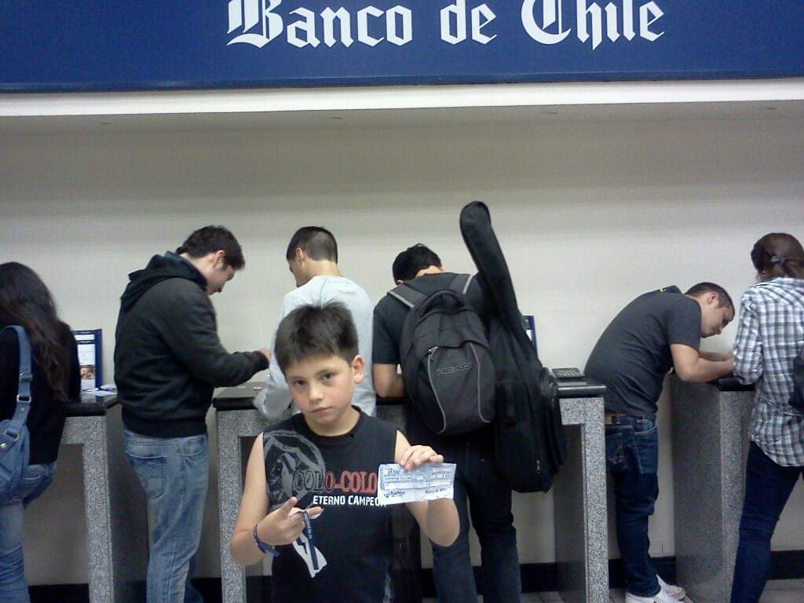
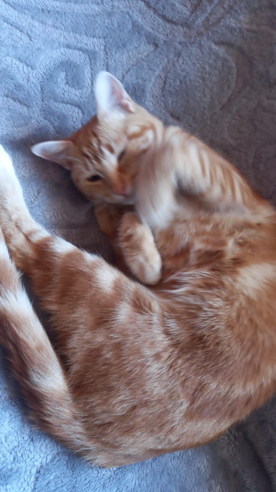

Sobre mí
Edad: 22
Altura: 1.85
Peso: 92
Mis Gustos
Me gusta mucho la musica, escucho mucho trap hip hop y reggaeton, me gusta la formula 1 en especial la escuderia ferrari y el piloto Charles Leclerc, tengo una obsesion por la moster, prefiero la incacola antes que una cocacola o una pepsi me considero una persona graciosa, no fea, simpatica, extrovertido y alguien muy optimista.
Este es mi gato, Michelada

Michelada es una gata con la edad de un año, es un gato muy jugeton y enojona, la quiero mucho <3